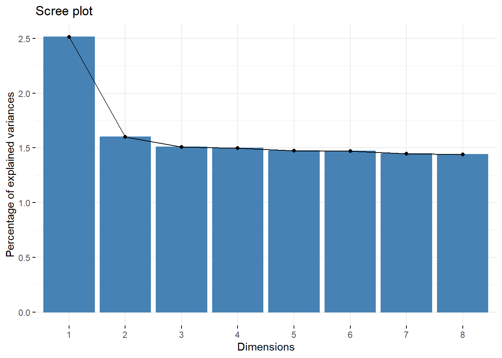
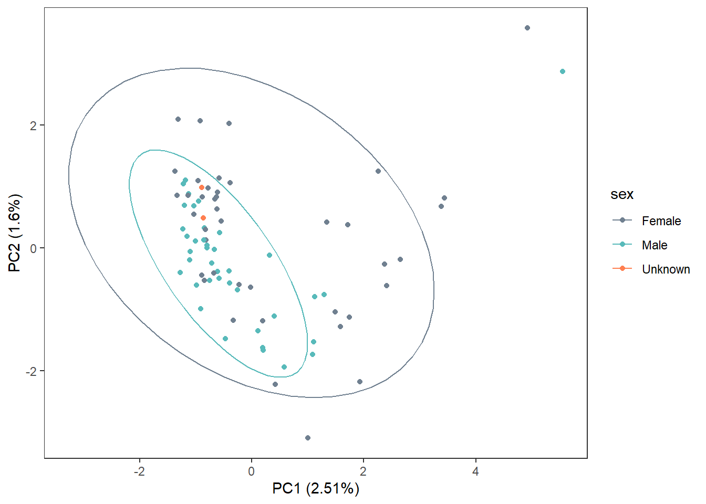
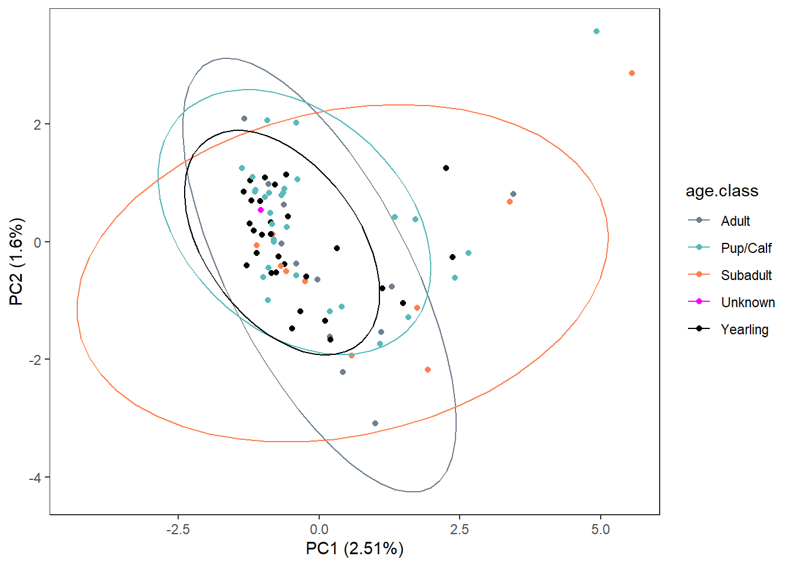
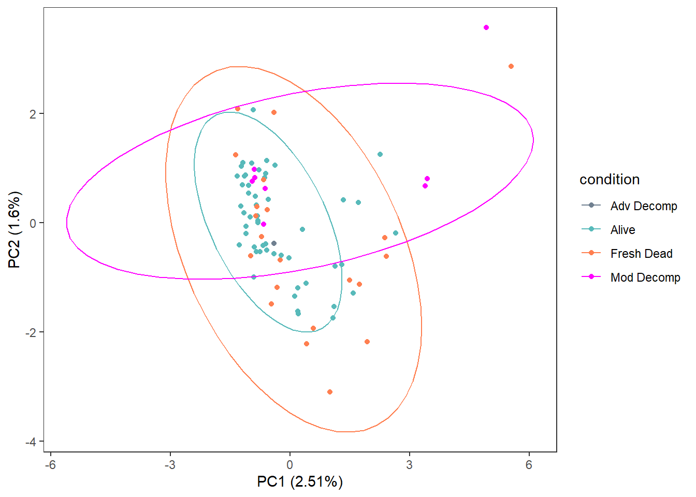
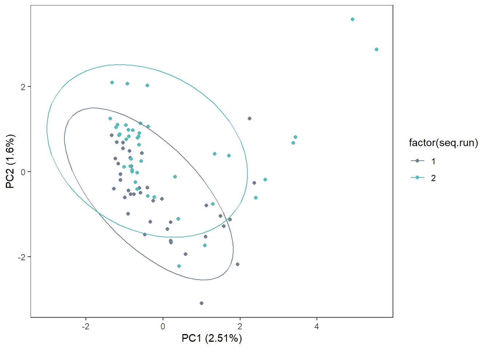

6 Low Coverage
6.1 GWAS - rrBLUP
6.1.2 Data
snp.matrix <-
fread("C:/Users/Christina/OneDrive - University of Maine System/pv-wgs/lowcoverage_maf_prune.raw") %>%
rename_with(gsub,
pattern = "\\_[A-Z]{1}$",
replacement = "", colnames(.))
snp.info <-
fread("C:/Users/Christina/OneDrive - University of Maine System/pv-wgs/lowcoverage_maf_prune.map") %>%
setNames(c("chr", "snp", "cM", "pos")) %>%
select(!cM) %>%
filter(snp %in% colnames(snp.matrix))
meta <-
fread("Output Files/metadata_tidy.csv") %>%
mutate(seq.id = gsub("B5GAN", "", seq.id)) %>%
filter(seq.id %in% snp.matrix$IID) 6.1.4 Population structure

6.1.4.2 PCA
Again, seemingly no sample clustering
pca <- prcomp(grm, scale=TRUE, center=TRUE)
# Variance explained by first 8 PCs
eigenvalues <- pca$sdev^2
prop <- round((eigenvalues/sum(eigenvalues)*100), 2)[1:8]
prop## [1] 2.51 1.60 1.51 1.50 1.48 1.47 1.45 1.44
pca.data <-
data.frame(
sample = rownames(pca$x),
x = pca$x[,1],
y = pca$x[,2]) %>%
merge(., meta, by.x="sample", by.y="seq.id")
labelx <-
paste0("PC1 (", prop[1], "%)", sep="")
labely <-
paste0("PC2 (", prop[2], "%)", sep="")
ggplot(pca.data, aes(x=x, y=y, col=classification)) +
geom_point() +
stat_ellipse() +
scale_color_manual(values=c("slategray", "#58baba")) +
labs(x=labelx,
y=labely) +
theme_bw() +
theme(panel.grid=element_blank())
ggplot(pca.data, aes(x=x, y=y, col=pdv)) +
geom_point() +
stat_ellipse() +
scale_color_manual(values=c("slategray", "#58baba", "coral")) +
labs(x=labelx,
y=labely) +
theme_bw() +
theme(panel.grid=element_blank())
ggplot(pca.data, aes(x=x, y=y, col=sex)) +
geom_point() +
stat_ellipse() +
scale_color_manual(values=c("slategray", "#58baba", "coral")) +
labs(x=labelx,
y=labely) +
theme_bw() +
theme(panel.grid=element_blank())## Too few points to calculate an ellipse## Warning: Removed 1 row containing missing values or values
## outside the scale range (`geom_path()`).
ggplot(pca.data, aes(x=x, y=y, col=age.class)) +
geom_point() +
stat_ellipse() +
scale_color_manual(values=c("slategray", "#58baba", "coral", "magenta", "black")) +
labs(x=labelx,
y=labely) +
theme_bw() +
theme(panel.grid=element_blank())## Too few points to calculate an ellipse## Warning: Removed 1 row containing missing values or values
## outside the scale range (`geom_path()`).
ggplot(pca.data, aes(x=x, y=y, col=condition)) +
geom_point() +
stat_ellipse() +
scale_color_manual(values=c("slategray", "#58baba", "coral", "magenta")) +
labs(x=labelx,
y=labely) +
theme_bw() +
theme(panel.grid=element_blank())## Too few points to calculate an ellipse## Warning: Removed 1 row containing missing values or values
## outside the scale range (`geom_path()`).
ggplot(pca.data, aes(x=x, y=y, col=factor(seq.run))) +
geom_point() +
stat_ellipse() +
scale_color_manual(values=c("slategray", "#58baba")) +
labs(x=labelx,
y=labely) +
theme_bw() +
theme(panel.grid=element_blank())
6.1.5 Configure data
6.1.5.2 Configure phenotype data
Non-survivor = 0, Survivor = 1
phenotypes <-
meta %>%
select(seq.id, classification) %>%
setNames(c("id", "phenotype")) %>%
mutate(phenotype = ifelse(phenotype=="Non-survivor", 0, 1))
# Make sure sample ID order matches
unique(phenotypes$id == rownames(x)) # no## [1] TRUE FALSEphenotypes <-
phenotypes[order(match(phenotypes$id, rownames(x))), ]
unique(phenotypes$id == rownames(grm)) # yes## [1] TRUE## [1] TRUE6.1.6 GWAS Model 1: genomic relationship matrix
## [1] "GWAS for trait: phenotype"
## [1] "Variance components estimated. Testing markers."6.1.6.1 Extract results
Set names to defaults for manhattan plot.
GWAS outputs -log10(pvalues), convert to pvalues.
Try FDR and Bonferroni p-adjustment methods.
gwasResults <-
model %>%
select(snp, chr, pos, phenotype) %>%
setNames(c("SNP", "CHR", "BP", "logP")) %>%
mutate(CHR = as.numeric(gsub("HiC_scaffold_", "", CHR))) %>%
mutate(P = 10^(-(logP)),
fdr = p.adjust(P, method = "fdr"),
bonf = p.adjust(P, method = "bonferroni"))
write.csv(gwasResults, "Output Files/lowcoverage_gwas.csv",
row.names = FALSE)6.1.6.2 Manhattan Plot
# Threshold for significance
bf <- (-log10(0.05 / nrow(snp.info)))
fdr <- -log10(0.05)
# Bonferroni
manhattan(gwasResults,
suggestiveline=FALSE,
col=c("black", "grey"),
genomewideline = bf,
p = "P", logp = TRUE)
# FDR
manhattan(gwasResults,
suggestiveline=FALSE,
col=c("black", "grey"),
genomewideline = fdr,
p = "fdr", logp = TRUE)
6.2 Fst-based Approach
To complement GWAS, conducting Fst test between cases and controls, selecting top 10% of SNPs as likely to be related to disease susceptibility.

6.2.4 Select outlier SNPs
6.2.4.1 Top 10%
Outlier = Within top 10% of Fst differentiation
ten <-
quantile(fst$WEIR_AND_COCKERHAM_FST, probs = c(0.9))
fst <-
fst %>%
mutate(outlier.10 = ifelse(WEIR_AND_COCKERHAM_FST > ten,
"outlier", "snp"))
nrow(filter(fst, outlier.10 == "outlier"))## [1] 15240ggplot(fst, aes(WEIR_AND_COCKERHAM_FST, fill = outlier.10)) +
geom_histogram(binwidth = 0.005) +
scale_fill_manual(values = c("slategray3", "gray40")) +
labs(x = "FST", title = "Low Coverage top 10%") +
theme_bw() +
theme(panel.grid = element_blank(),
legend.position = "none")
6.2.4.2 > 5SD
sd <-
mean(fst$WEIR_AND_COCKERHAM_FST) +
5*sd(fst$WEIR_AND_COCKERHAM_FST)
fst <-
fst %>%
mutate(outlier.sd = ifelse(WEIR_AND_COCKERHAM_FST > sd, "outlier", "snp"))
nrow(fst %>% filter(outlier.sd == "outlier"))## [1] 524ggplot(fst, aes(WEIR_AND_COCKERHAM_FST, fill = outlier.sd)) +
geom_histogram(binwidth = 0.005) +
scale_fill_manual(values = c("slategray3", "gray40")) +
labs(x = "FST") +
theme_bw() +
theme(panel.grid = element_blank(),
legend.position = "none")
6.2.4.3 Extract SNPs & 600 bp positions
fst.10 <-
fst %>%
filter(outlier.10 == "outlier") %>%
mutate(minbp = POS - 600,
maxbp = POS + 600,
flank = paste0(CHROM, ":", minbp, "-", maxbp, sep = ""))
write.csv(fst.10, "Output Files/lowcoverage_fst_10_outlierposition.csv",
row.names = FALSE)
fst.sd <-
fst %>%
filter(outlier.sd == "outlier") %>%
mutate(minbp = POS - 600,
maxbp = POS + 600,
flank = paste0(CHROM, ":", minbp, "-", maxbp, sep = ""))
write.csv(fst.sd, "Output Files/lowcoverage_fst_sd_outlierposition.csv",
row.names = FALSE)6.3 SNP Annotation
6.3.2 Data
Read in: SNP gene/exon/cds information
gwas_snp <-
read.csv("Output Files/lowcoverage_gwas.csv")
fst_sd_genes <-
fread("Input Files/lowcoverage_fst_sd_outlier_genes_snps.txt")
fst_sd_exons <-
fread("Input Files/lowcoverage_fst_sd_outlier_exons_snps.txt")
fst_sd_cds <-
fread("Input Files/lowcoverage_fst_sd_outlier_cds_snps.txt")
fst_10_genes <-
fread("Input Files/lowcoverage_fst_10_outlier_genes_snps.txt")
fst_10_exons <-
fread("Input Files/lowcoverage_fst_10_outlier_exons_snps.txt")
fst_10_cds <-
fread("Input Files/lowcoverage_fst_10_outlier_cds_snps.txt")
pv_genes <-
fread("Input Files/GSC_HSeal_1.0_HiC_genes.gff3")6.3.4 FST 5 SD
6.3.4.1 ID genes
fst_sd_genes_tidy <-
fst_sd_genes %>%
mutate(gene = V9,
gene = str_split_fixed(gene, ";", 5),
gene = str_extract(gene[,4], "(?<=to ).*(?=:)")) %>%
filter(!is.na(gene)) %>%
mutate(classification =
ifelse(V4 %in% fst_sd_cds$V4, "cds",
ifelse(V4 %in% fst_sd_exons, "exon", "gene")))
write.csv(fst_sd_genes_tidy, "Output Files/lowcoverage_fst_sd_snp_geneid.csv")6.3.4.2 GO Terms
go_bp_sd <-
WebGestaltR(enrichMethod="ORA", organism="hsapiens",
enrichDatabase="geneontology_Biological_Process",
interestGene = fst_sd_genes_tidy$gene, interestGeneType = "genesymbol",
referenceGene = pv_genes_tidy$gene, referenceGeneType = "genesymbol",
sigMethod = "fdr", fdrThr = 0.05,
isOutput = FALSE)## Loading the functional categories...
## Loading the ID list...
## Loading the reference list...
## Performing the enrichment analysis...## Warning in oraEnrichment(interestGeneList, referenceGeneList, geneSet, minNum =
## minNum, : No significant gene set is identified based on FDR 0.05!go_cc_sd <-
WebGestaltR(enrichMethod="ORA", organism="hsapiens",
enrichDatabase="geneontology_Cellular_Component",
interestGene = fst_sd_genes_tidy$gene, interestGeneType = "genesymbol",
referenceGene = pv_genes_tidy$gene, referenceGeneType = "genesymbol",
sigMethod = "fdr", fdrThr = 0.05,
isOutput = FALSE)## Loading the functional categories...
## Loading the ID list...
## Loading the reference list...
## Performing the enrichment analysis...## Warning in oraEnrichment(interestGeneList, referenceGeneList, geneSet, minNum =
## minNum, : No significant gene set is identified based on FDR 0.05!go_mf_sd <-
WebGestaltR(enrichMethod="ORA", organism="hsapiens",
enrichDatabase="geneontology_Molecular_Function",
interestGene = fst_sd_genes_tidy$gene, interestGeneType = "genesymbol",
referenceGene = pv_genes_tidy$gene, referenceGeneType = "genesymbol",
sigMethod = "fdr", fdrThr = 0.05,
isOutput = FALSE)## Loading the functional categories...
## Loading the ID list...
## Loading the reference list...
## Performing the enrichment analysis...## Warning in oraEnrichment(interestGeneList, referenceGeneList, geneSet, minNum =
## minNum, : No significant gene set is identified based on FDR 0.05!6.3.4.3 KEGG Analysis
kegg_sd <-
WebGestaltR(enrichMethod = "ORA", organism = "hsapiens",
enrichDatabase = "pathway_KEGG",
interestGene = fst_sd_genes_tidy$gene, interestGeneType = "genesymbol",
referenceGene = pv_genes_tidy$gene, referenceGeneType = "genesymbol",
minNum = 5, sigMethod = "fdr", isOutput = FALSE) ## Loading the functional categories...
## Loading the ID list...
## Loading the reference list...
## Performing the enrichment analysis...| geneSet | description | link | size | overlap | expect | enrichmentRatio | pValue | FDR | overlapId | userId |
|---|---|---|---|---|---|---|---|---|---|---|
| hsa04931 | Insulin resistance | http://www.kegg.jp/kegg-bin/show_pathway?hsa04931+11001+32+5500+5524+5836 | 101 | 5 | 0.4701579 | 10.63472 | 8.74e-05 | 0.0282283 | 11001;32;5500;5524;5836 | PPP1CB;PTPA;ACACB;SLC27A2;PYGL |
6.3.5 FST 10%
6.3.5.1 ID genes
fst_10_genes_tidy <-
fst_10_genes %>%
mutate(gene = V9,
gene = str_split_fixed(gene, ";", 5),
gene = str_extract(gene[,4], "(?<=to ).*(?=:)")) %>%
filter(!is.na(gene)) %>%
mutate(classification =
ifelse(V4 %in% fst_10_cds$V4, "cds",
ifelse(V4 %in% fst_10_exons, "exon", "gene")))
write.csv(fst_10_genes_tidy, "Output Files/lowcoverage_fst_10_snp_geneid.csv")6.3.5.2 GO Terms
go_bp_10 <-
WebGestaltR(enrichMethod="ORA", organism="hsapiens",
enrichDatabase="geneontology_Biological_Process",
interestGene = fst_10_genes_tidy$gene, interestGeneType = "genesymbol",
referenceGene = pv_genes_tidy$gene, referenceGeneType = "genesymbol",
sigMethod = "fdr", fdrThr = 0.05,
isOutput = FALSE)## Loading the functional categories...
## Loading the ID list...
## Loading the reference list...
## Performing the enrichment analysis...## Warning in oraEnrichment(interestGeneList, referenceGeneList, geneSet, minNum =
## minNum, : No significant gene set is identified based on FDR 0.05!go_cc_10 <-
WebGestaltR(enrichMethod="ORA", organism="hsapiens",
enrichDatabase="geneontology_Cellular_Component",
interestGene = fst_10_genes_tidy$gene, interestGeneType = "genesymbol",
referenceGene = pv_genes_tidy$gene, referenceGeneType = "genesymbol",
sigMethod = "fdr", fdrThr = 0.05,
isOutput = FALSE)## Loading the functional categories...
## Loading the ID list...
## Loading the reference list...
## Performing the enrichment analysis...go_mf_10 <-
WebGestaltR(enrichMethod="ORA", organism="hsapiens",
enrichDatabase="geneontology_Molecular_Function",
interestGene = fst_10_genes_tidy$gene, interestGeneType = "genesymbol",
referenceGene = pv_genes_tidy$gene, referenceGeneType = "genesymbol",
sigMethod = "fdr", fdrThr = 0.05,
isOutput = FALSE)## Loading the functional categories...
## Loading the ID list...
## Loading the reference list...
## Performing the enrichment analysis...| geneSet | description | link | size | overlap | expect | enrichmentRatio | pValue | FDR | overlapId | userId |
|---|---|---|---|---|---|---|---|---|---|---|
| GO:0016528 | sarcoplasm | http://amigo.geneontology.org/amigo/term/GO:0016528 | 68 | 23 | 9.350412 | 2.459785 | 0.0000210 | 0.0154725 | 178;286;288;444;781;816;818;845;1760;2318;3709;3710;4208;4842;5339;6261;6262;6263;7057;7498;10345;55151;123722 | XDH;TMEM38B;NOS1;RYR1;DMPK;ITPR3;TRDN;MEF2C;AGL;CASQ2;ASPH;PLEC;ITPR2;FLNC;CACNA2D1;CAMK2B;RYR2;ANK3;CAMK2G;ANK1;FSD2;THBS1;RYR3 |
| GO:0030018 | Z disc | http://amigo.geneontology.org/amigo/term/GO:0030018 | 110 | 31 | 15.125666 | 2.049497 | 0.0000532 | 0.0169267 | 274;286;287;288;493;776;845;1499;2318;4604;4842;5530;6261;6262;6263;6334;6546;7273;8470;8736;9172;9759;11155;23363;26263;29780;84033;84700;114907;127294;100820829 | SLC8A1;NOS1;MYO18B;MYOM1;RYR1;OBSCN;MYOM3;CASQ2;FBXO32;SCN8A;MYBPC1;PARVB;BIN1;TTN;OBSL1;HDAC4;FLNC;ATP2B4;RYR2;ANK3;LDB3;MYOM2;SORBS2;ANK1;ANK2;PPP3CA;FBXO22;MYZAP;RYR3;CTNNB1;CACNA1D |
| GO:0016529 | sarcoplasmic reticulum | http://amigo.geneontology.org/amigo/term/GO:0016529 | 59 | 20 | 8.112857 | 2.465223 | 0.0000688 | 0.0169267 | 178;286;288;444;781;816;818;845;1760;3709;3710;4842;6261;6262;6263;7057;7498;10345;55151;123722 | XDH;TMEM38B;NOS1;RYR1;DMPK;ITPR3;TRDN;AGL;CASQ2;ASPH;ITPR2;CACNA2D1;CAMK2B;RYR2;ANK3;CAMK2G;ANK1;FSD2;THBS1;RYR3 |
| GO:0031674 | I band | http://amigo.geneontology.org/amigo/term/GO:0031674 | 119 | 32 | 16.363221 | 1.955605 | 0.0001089 | 0.0200961 | 274;286;287;288;493;776;779;845;1499;2318;4604;4842;5530;6261;6262;6263;6334;6546;7273;8470;8736;9172;9759;11155;23363;26263;29780;84033;84700;114907;127294;100820829 | SLC8A1;NOS1;MYO18B;MYOM1;RYR1;OBSCN;MYOM3;CASQ2;FBXO32;SCN8A;MYBPC1;PARVB;BIN1;TTN;OBSL1;HDAC4;FLNC;ATP2B4;CACNA1S;RYR2;ANK3;LDB3;MYOM2;SORBS2;ANK1;ANK2;PPP3CA;FBXO22;MYZAP;RYR3;CTNNB1;CACNA1D |
| GO:0043194 | axon initial segment | http://amigo.geneontology.org/amigo/term/GO:0043194 | 17 | 9 | 2.337603 | 3.850098 | 0.0001476 | 0.0217928 | 274;286;287;288;3785;3786;4133;6334;57731 | KCNQ2;SPTBN4;KCNQ3;SCN8A;BIN1;MAP2;ANK3;ANK1;ANK2 |
| GO:0030315 | T-tubule | http://amigo.geneontology.org/amigo/term/GO:0030315 | 43 | 15 | 5.912761 | 2.536886 | 0.0003832 | 0.0407171 | 274;287;288;493;776;779;781;2806;4842;6261;6326;6546;8291;27092;59285 | SLC8A1;DYSF;NOS1;GOT2;RYR1;CACNG6;CACNG4;BIN1;SCN2A;CACNA2D1;ATP2B4;CACNA1S;ANK3;ANK2;CACNA1D |
| GO:0033268 | node of Ranvier | http://amigo.geneontology.org/amigo/term/GO:0033268 | 12 | 7 | 1.650073 | 4.242237 | 0.0003862 | 0.0407171 | 274;288;3785;3786;6326;6334;57731 | KCNQ2;SPTBN4;KCNQ3;SCN8A;BIN1;SCN2A;ANK3 |
| GO:0016459 | myosin complex | http://amigo.geneontology.org/amigo/term/GO:0016459 | 58 | 18 | 7.975351 | 2.256954 | 0.0005388 | 0.0497087 | 4430;4604;4621;4627;4643;4645;4648;4651;8735;8736;9172;22998;53904;64005;79784;84700;140465;399687 | MYO18B;MYOM1;MYO5B;MYH14;MYO10;MYH13;MYH3;MYO18A;MYO3A;MYL6B;MYBPC1;MYH9;MYO7B;MYO1B;MYO1G;MYOM2;LIMCH1;MYO1E |
| geneSet | description | link | size | overlap | expect | enrichmentRatio | pValue | FDR | overlapId | userId |
|---|---|---|---|---|---|---|---|---|---|---|
| GO:0005516 | calmodulin binding | http://amigo.geneontology.org/amigo/term/GO:0005516 | 177 | 56 | 24.476132 | 2.287943 | 0.0000000 | 0.0000009 | 355;490;493;779;800;814;816;818;1956;3706;3782;3785;3786;4133;4430;4621;4627;4638;4643;4645;4651;4842;4843;5121;5130;5260;5530;5533;5924;6261;6262;6263;6546;6645;7273;7442;7466;8398;8735;23236;23271;23352;27130;29966;53904;55755;57118;64005;79012;79784;84033;85366;157922;200373;219670;259266 | SLC8A1;PLCB1;MYLK2;KCNQ2;INVS;CDK5RAP2;CAMSAP1;NOS1;MYO5B;SNTB2;RYR1;MYH14;MYO10;CAMK4;RASGRF2;OBSCN;MYH13;MYH3;TRPV1;NOS2;UBR4;KCNQ3;PHKG1;CAMK1D;MYO3A;ENKUR;ATP2B1;MYH9;PLA2G6;CFAP221;TTN;MYO1B;MAP2;CALD1;EGFR;MYO1G;CAMK2B;KCNN3;ATP2B4;CAMSAP2;CACNA1S;ASPM;FAS;RYR2;CAMK2G;PPP3CC;PPP3CA;WFS1;MYO1E;ITPKA;RYR3;STRN3;PCP4;MYLK;PCYT1A;CAMKV |
| GO:0005548 | phospholipid transporter activity | http://amigo.geneontology.org/amigo/term/GO:0005548 | 57 | 23 | 7.882144 | 2.917988 | 0.0000007 | 0.0003830 | 19;950;4363;5205;5244;9619;10079;23120;23200;23250;51761;57088;57198;57605;63982;83394;114879;114884;121601;153768;196527;338440;374868 | ATP9A;ANO9;OSBPL5;ANO3;ABCA1;PITPNM2;ATP8B1;ATP9B;ATP10B;PRELID2;PITPNM3;ABCC1;ANO6;ANO4;ATP11A;ATP8A2;ABCB4;ATP8B2;SCARB2;ABCG1;ATP11B;PLSCR4;OSBPL10 |
| GO:0004674 | protein serine/threonine kinase activity | http://amigo.geneontology.org/amigo/term/GO:0004674 | 387 | 86 | 53.515610 | 1.607008 | 0.0000037 | 0.0013390 | 157;208;472;595;613;814;816;818;1022;1452;1456;1613;1760;1859;1956;2068;2185;2580;3551;3656;3706;4052;4139;4293;4294;4638;5260;5563;5566;5567;5578;5587;5593;5604;5610;6093;6196;6300;6446;6790;7048;7273;8550;9134;9175;9201;9475;9625;9833;9874;10110;10595;10783;11183;23043;23178;23235;28996;29959;51135;51719;53904;54822;55351;55437;55561;55589;56975;57118;57787;65061;65268;65975;79012;79858;83931;84033;85366;91419;92335;120892;130399;140609;140803;375449;440275 | ROCK2;NRBP1;LTBP1;EIF2AK2;MYLK2;SGK2;AURKA;CCND1;CDC42BPG;STK33;SIK2;ATM;WNK2;TRPM6;MELK;NEK6;MAPKAPK5;GRK3;BCR;ROCK1;MAP3K10;AKT2;MARK4;ERCC2;DMPK;SGK1;RPS6KA2;CSNK1A1;CAMK4;CDK7;MAST4;CSNK1G3;OBSCN;PRKCA;STRADA;AATK;STK40;PRKAA2;PRKACB;CCNE2;FAM20C;PHKG1;ERN2;CAMK1D;MYO3A;LRRK2;IRAK4;ATP23;MAPK12;DCLK1;ACVR1C;TLK1;TTN;STRADB;CDK15;CAB39;PASK;HIPK2;EGFR;CAMK2B;MARK1;NEK7;CAMK2G;IKBKB;PTK2B;PRKG2;BMP2K;STK32B;GAK;MAP2K1;TRPM7;ITPKA;EIF2AK4;PRKD1;MAP4K5;MAP3K9;DYRK1A;MYLK;MAP3K13;TNIK;NEK11;TGFBR2;IRAK2;CAMKV;PRKACA;DAPK3 |
| GO:0004012 | phospholipid-translocating ATPase activity | http://amigo.geneontology.org/amigo/term/GO:0004012 | 21 | 11 | 2.903948 | 3.787947 | 0.0000318 | 0.0086881 | 19;4363;5205;5244;10079;23120;23200;23250;51761;57198;374868 | ATP9A;ABCA1;ATP8B1;ATP9B;ATP10B;ABCC1;ATP11A;ATP8A2;ABCB4;ATP8B2;ATP11B |
| GO:0015085 | calcium ion transmembrane transporter activity | http://amigo.geneontology.org/amigo/term/GO:0015085 | 128 | 33 | 17.700253 | 1.864380 | 0.0002271 | 0.0496419 | 309;490;493;774;776;779;781;1139;3685;3709;3710;6261;6262;6263;6546;7442;8913;9254;9256;9914;26133;27039;27092;54499;54822;57620;59285;79054;80024;80228;93589;140803;168507 | SLC8A1;TRPC4AP;TRPM6;CACNA1B;SLC8B1;ATP2C2;RYR1;CACNG6;ITPR3;ANXA6;PKD2L2;TRPV1;TSPOAP1;CACNA1G;CACNG4;ORAI2;CACNA2D4;ITPR2;ATP2B1;ITGAV;TRPM8;CACNA2D1;PKD1L1;TMCO1;ATP2B4;CACNA1S;RYR2;STIM2;CHRNA7;TRPM7;RYR3;CACNA1D;CACNA2D2 |
6.3.5.3 KEGG Analysis
kegg_10 <-
WebGestaltR(enrichMethod = "ORA", organism = "hsapiens",
enrichDatabase = "pathway_KEGG",
interestGene = fst_10_genes_tidy$gene, interestGeneType = "genesymbol",
referenceGene = pv_genes_tidy$gene, referenceGeneType = "genesymbol",
minNum = 5, sigMethod = "fdr", isOutput = FALSE) ## Loading the functional categories...
## Loading the ID list...
## Loading the reference list...
## Performing the enrichment analysis...| geneSet | description | link | size | overlap | expect | enrichmentRatio | pValue | FDR | overlapId | userId |
|---|---|---|---|---|---|---|---|---|---|---|
| hsa04921 | Oxytocin signaling pathway | http://www.kegg.jp/kegg-bin/show_pathway?hsa04921+123745+140465+146850+1938+1956+23236+23533+27092+283748+3709+3710+4208+4638+4773+4881+4893+5330+5332+5500+5530+5533+5563+5566+5567+5578+5604+57118+59285+595+6093+6261+6262+6263+776+779+781+814+816+818+85366+9254+93589+9475 | 131 | 43 | 19.121862 | 2.248735 | 0.0000001 | 0.0000270 | 123745;140465;146850;1938;1956;23236;23533;27092;283748;3709;3710;4208;4638;4773;4881;4893;5330;5332;5500;5530;5533;5563;5566;5567;5578;5604;57118;59285;595;6093;6261;6262;6263;776;779;781;814;816;818;85366;9254;93589;9475 | ROCK2;PPP1CB;PLCB4;PLCB1;MYLK2;NFATC2;CCND1;ROCK1;RYR1;CACNG6;ITPR3;CAMK4;MEF2C;PIK3R6;PIK3R5;PRKCA;CACNG4;PRKAA2;PRKACB;NRAS;CAMK1D;CACNA2D4;ITPR2;MYL6B;CACNA2D1;EGFR;CAMK2B;NPR1;CACNA1S;RYR2;CAMK2G;PPP3CC;PPP3CA;MAP2K1;PLA2G4D;PLA2G4E;PLCB2;RYR3;MYLK;CACNA1D;PRKACA;EEF2;CACNA2D2 |
| hsa04072 | Phospholipase D signaling pathway | http://www.kegg.jp/kegg-bin/show_pathway?hsa04072+10411+11069+123745+146850+1608+185+1956+208+2185+23236+23533+2534+2549+283748+4893+5156+5159+5291+5295+5330+5332+5336+5338+553+55326+5578+5604+5898+6654+6655+7248+8395+8503+8527+9162+9266 | 127 | 36 | 18.537988 | 1.941958 | 0.0000393 | 0.0042958 | 10411;11069;123745;146850;1608;185;1956;208;2185;23236;23533;2534;2549;283748;4893;5156;5159;5291;5295;5330;5332;5336;5338;553;55326;5578;5604;5898;6654;6655;7248;8395;8503;8527;9162;9266 | SOS1;PLCB4;PLCB1;PIP5K1B;TSC1;PLCG2;AKT2;CYTH2;FYN;PDGFRB;PIK3R1;PLD2;PIK3R6;PIK3R5;PRKCA;PIK3R3;NRAS;RAPGEF3;RAPGEF4;DGKD;DGKI;RALA;EGFR;AVPR1B;PTK2B;AGPAT5;GAB1;PDGFRA;MAP2K1;PLA2G4D;PLA2G4E;PLCB2;SOS2;DGKG;AGTR1;PIK3CB |
| hsa04020 | Calcium signaling pathway | http://www.kegg.jp/kegg-bin/show_pathway?hsa04020+1139+185+1956+2066+2185+23236+2769+3360+3706+3709+3710+4638+4842+4843+490+493+5156+5159+5260+5330+5332+5336+553+5530+5533+5566+5567+5578+57620+6261+6262+6263+6546+7201+774+776+779+80228+814+816+818+84812+85366+8913 | 167 | 44 | 24.376725 | 1.805001 | 0.0000414 | 0.0042958 | 1139;185;1956;2066;2185;23236;2769;3360;3706;3709;3710;4638;4842;4843;490;493;5156;5159;5260;5330;5332;5336;553;5530;5533;5566;5567;5578;57620;6261;6262;6263;6546;7201;774;776;779;80228;814;816;818;84812;85366;8913 | SLC8A1;PLCB4;PLCB1;MYLK2;CACNA1B;NOS1;TRHR;PLCG2;RYR1;ITPR3;HTR4;PDGFRB;CAMK4;NOS2;CACNA1G;PRKCA;PRKACB;ORAI2;PHKG1;ITPR2;ATP2B1;ERBB4;PLCD4;EGFR;CAMK2B;AVPR1B;ATP2B4;CACNA1S;RYR2;CAMK2G;PTK2B;PPP3CC;PPP3CA;PDGFRA;STIM2;CHRNA7;ITPKA;PLCB2;RYR3;MYLK;AGTR1;CACNA1D;PRKACA;GNA15 |
| hsa04510 | Focal adhesion | http://www.kegg.jp/kegg-bin/show_pathway?hsa04510+1284+1286+1292+1293+1499+1729+1956+208+2318+2534+256076+29780+3082+3371+3480+3672+3675+3680+3685+3690+3908+3909+3910+3912+3915+4638+5156+5159+5291+5295+5500+5578+5604+595+6093+6654+6655+7057+7058+7148+7408+7424+8503+85366+9475+9564 | 180 | 46 | 26.274314 | 1.750759 | 0.0000631 | 0.0042958 | 1284;1286;1292;1293;1499;1729;1956;208;2318;2534;256076;29780;3082;3371;3480;3672;3675;3680;3685;3690;3908;3909;3910;3912;3915;4638;5156;5159;5291;5295;5500;5578;5604;595;6093;6654;6655;7057;7058;7148;7408;7424;8503;85366;9475;9564 | ROCK2;PPP1CB;SOS1;MYLK2;CCND1;TNC;ROCK1;LAMA3;BCAR1;AKT2;VASP;TNXB;FYN;LAMA4;LAMA2;THBS2;ITGA1;PDGFRB;PIK3R1;DIAPH1;ITGA3;ITGB3;PRKCA;PIK3R3;PARVB;COL4A2;ITGAV;COL4A4;COL6A3;FLNC;HGF;LAMB1;EGFR;LAMC1;VEGFC;PDGFRA;IGF1R;MAP2K1;THBS1;SOS2;COL6A2;MYLK;PIK3CB;COL6A5;ITGA9;CTNNB1 |
| hsa05231 | Choline metabolism in cancer | http://www.kegg.jp/kegg-bin/show_pathway?hsa05231+10434+1119+123745+1608+1956+208+23446+283748+4893+5130+5156+5159+5291+5295+5338+5578+5604+56261+6581+6584+6654+6655+7248+8395+8503+8527+9162 | 87 | 27 | 12.699252 | 2.126110 | 0.0000665 | 0.0042958 | 10434;1119;123745;1608;1956;208;23446;283748;4893;5130;5156;5159;5291;5295;5338;5578;5604;56261;6581;6584;6654;6655;7248;8395;8503;8527;9162 | SOS1;GPCPD1;CHKA;PIP5K1B;SLC44A1;TSC1;AKT2;SLC22A3;PDGFRB;PIK3R1;SLC22A5;PLD2;PRKCA;PIK3R3;NRAS;LYPLA1;DGKD;DGKI;EGFR;PDGFRA;MAP2K1;PLA2G4D;PLA2G4E;SOS2;PCYT1A;DGKG;PIK3CB |
| hsa04371 | Apelin signaling pathway | http://www.kegg.jp/kegg-bin/show_pathway?hsa04371+146850+182+185+208+23236+23533+2791+3709+3710+4208+4209+4638+4842+4843+4893+5054+5140+5330+5332+5346+5563+5566+5567+55811+5604+595+6261+6262+6263+6546+814+85366+9759 | 117 | 33 | 17.078304 | 1.932276 | 0.0000912 | 0.0049096 | 146850;182;185;208;23236;23533;2791;3709;3710;4208;4209;4638;4842;4843;4893;5054;5140;5330;5332;5346;5563;5566;5567;55811;5604;595;6261;6262;6263;6546;814;85366;9759 | SLC8A1;JAG1;PLCB4;PLCB1;MYLK2;CCND1;PDE3B;NOS1;RYR1;AKT2;ITPR3;CAMK4;MEF2C;PIK3R6;PIK3R5;NOS2;PRKAA2;PRKACB;NRAS;SERPINE1;ITPR2;HDAC4;GNG11;MEF2D;ADCY10;RYR2;PLIN1;MAP2K1;PLCB2;RYR3;MYLK;AGTR1;PRKACA |
| hsa05205 | Proteoglycans in cancer | http://www.kegg.jp/kegg-bin/show_pathway?hsa05205+10855+1499+1956+1975+2017+2066+208+2318+2549+286+287+288+3082+3339+3480+355+3685+3690+3709+3710+4893+5291+5295+5329+5336+5500+5566+5567+5578+5604+595+6093+6300+6382+6654+6655+7057+7074+7472+7481+816+818+8503+9138+9475 | 179 | 45 | 26.128346 | 1.722268 | 0.0001151 | 0.0053133 | 10855;1499;1956;1975;2017;2066;208;2318;2549;286;287;288;3082;3339;3480;355;3685;3690;3709;3710;4893;5291;5295;5329;5336;5500;5566;5567;5578;5604;595;6093;6300;6382;6654;6655;7057;7074;7472;7481;816;818;8503;9138;9475 | ROCK2;SDC1;PPP1CB;SOS1;CTTN;CCND1;WNT11;ROCK1;PLCG2;AKT2;ARHGEF1;PLAUR;ITPR3;PIK3R1;ITGB3;PRKCA;HSPG2;PIK3R3;PRKACB;NRAS;ITPR2;EIF4B;MAPK12;ITGAV;ERBB4;FLNC;WNT2;HGF;EGFR;CAMK2B;FAS;ANK3;CAMK2G;ANK1;GAB1;ANK2;HPSE;IGF1R;MAP2K1;THBS1;SOS2;TIAM1;PIK3CB;CTNNB1;PRKACA |
| hsa04512 | ECM-receptor interaction | http://www.kegg.jp/kegg-bin/show_pathway?hsa04512+1284+1286+1292+1293+256076+3161+3339+3371+3672+3675+3680+3685+3690+3908+3909+3910+3912+3915+51206+6382+7057+7058+7148+9899 | 78 | 24 | 11.385536 | 2.107938 | 0.0001937 | 0.0078187 | 1284;1286;1292;1293;256076;3161;3339;3371;3672;3675;3680;3685;3690;3908;3909;3910;3912;3915;51206;6382;7057;7058;7148;9899 | SDC1;TNC;LAMA3;GP6;TNXB;LAMA4;LAMA2;THBS2;ITGA1;HMMR;ITGA3;ITGB3;HSPG2;COL4A2;ITGAV;COL4A4;COL6A3;LAMB1;LAMC1;SV2B;THBS1;COL6A2;COL6A5;ITGA9 |
| hsa04912 | GnRH signaling pathway | http://www.kegg.jp/kegg-bin/show_pathway?hsa04912+1081+123745+1956+2185+23236+283748+3709+3710+4893+5330+5332+5338+5566+5567+5578+5604+6300+6654+6655+776+779+816+818 | 78 | 23 | 11.385536 | 2.020107 | 0.0005190 | 0.0186276 | 1081;123745;1956;2185;23236;283748;3709;3710;4893;5330;5332;5338;5566;5567;5578;5604;6300;6654;6655;776;779;816;818 | SOS1;PLCB4;PLCB1;ITPR3;CGA;PLD2;PRKCA;PRKACB;NRAS;ITPR2;MAPK12;EGFR;CAMK2B;CACNA1S;CAMK2G;PTK2B;MAP2K1;PLA2G4D;PLA2G4E;PLCB2;SOS2;CACNA1D;PRKACA |
| hsa04611 | Platelet activation | http://www.kegg.jp/kegg-bin/show_pathway?hsa04611+123745+146850+208+23236+23533+2534+283748+3690+3709+3710+4638+51206+5291+5295+5330+5332+5336+5500+5566+5567+5593+6093+6300+7408+8503+85366+9138+9475 | 105 | 28 | 15.326683 | 1.826879 | 0.0008219 | 0.0249461 | 123745;146850;208;23236;23533;2534;283748;3690;3709;3710;4638;51206;5291;5295;5330;5332;5336;5500;5566;5567;5593;6093;6300;7408;8503;85366;9138;9475 | ROCK2;PPP1CB;PLCB4;PLCB1;MYLK2;ROCK1;PLCG2;AKT2;ARHGEF1;VASP;GP6;ITPR3;FYN;PIK3R1;PIK3R6;PIK3R5;ITGB3;PIK3R3;PRKACB;ITPR2;MAPK12;PRKG2;PLA2G4D;PLA2G4E;PLCB2;MYLK;PIK3CB;PRKACA |
| hsa04720 | Long-term potentiation | http://www.kegg.jp/kegg-bin/show_pathway?hsa04720+10411+23236+3709+3710+4893+5330+5332+5500+5530+5533+5566+5567+5578+5604+6196+814+816+818 | 57 | 18 | 8.320199 | 2.163410 | 0.0008496 | 0.0249461 | 10411;23236;3709;3710;4893;5330;5332;5500;5530;5533;5566;5567;5578;5604;6196;814;816;818 | PPP1CB;PLCB4;PLCB1;ITPR3;RPS6KA2;CAMK4;PRKCA;PRKACB;NRAS;ITPR2;RAPGEF3;CAMK2B;CAMK2G;PPP3CC;PPP3CA;MAP2K1;PLCB2;PRKACA |
| hsa04270 | Vascular smooth muscle contraction | http://www.kegg.jp/kegg-bin/show_pathway?hsa04270+10267+123745+140465+185+23236+27345+283748+3709+3710+4638+4881+5330+5332+5500+553+5566+5567+5578+5604+6093+776+779+800+8398+85366+9138+9475+9826 | 107 | 28 | 15.618620 | 1.792732 | 0.0011305 | 0.0263454 | 10267;123745;140465;185;23236;27345;283748;3709;3710;4638;4881;5330;5332;5500;553;5566;5567;5578;5604;6093;776;779;800;8398;85366;9138;9475;9826 | ROCK2;PPP1CB;PLCB4;PLCB1;MYLK2;ROCK1;ARHGEF1;ITPR3;PRKCA;PRKACB;ITPR2;MYL6B;KCNMB4;PLA2G6;RAMP1;CALD1;NPR1;ARHGEF11;AVPR1B;CACNA1S;MAP2K1;PLA2G4D;PLA2G4E;PLCB2;MYLK;AGTR1;CACNA1D;PRKACA |
| hsa04725 | Cholinergic synapse | http://www.kegg.jp/kegg-bin/show_pathway?hsa04725+1139+146850+208+23236+23533+2534+2791+3709+3710+3785+3786+4893+5291+5295+5330+5332+5566+5567+5578+5604+774+776+779+814+816+818+8503 | 102 | 27 | 14.888778 | 1.813446 | 0.0011419 | 0.0263454 | 1139;146850;208;23236;23533;2534;2791;3709;3710;3785;3786;4893;5291;5295;5330;5332;5566;5567;5578;5604;774;776;779;814;816;818;8503 | PLCB4;PLCB1;KCNQ2;CACNA1B;AKT2;ITPR3;FYN;CAMK4;PIK3R1;PIK3R6;PIK3R5;PRKCA;PIK3R3;PRKACB;NRAS;KCNQ3;ITPR2;GNG11;CAMK2B;CACNA1S;CAMK2G;CHRNA7;MAP2K1;PLCB2;PIK3CB;CACNA1D;PRKACA |
| hsa04919 | Thyroid hormone signaling pathway | http://www.kegg.jp/kegg-bin/show_pathway?hsa04919+116931+1499+1733+208+23236+25942+3685+3690+481+4893+5291+5295+5330+5332+5336+5566+5567+5578+5604+595+6258+84812+8503+8648+8841+90390+9440 | 102 | 27 | 14.888778 | 1.813446 | 0.0011419 | 0.0263454 | 116931;1499;1733;208;23236;25942;3685;3690;481;4893;5291;5295;5330;5332;5336;5566;5567;5578;5604;595;6258;84812;8503;8648;8841;90390;9440 | NCOA1;PLCB4;PLCB1;CCND1;MED17;PLCG2;AKT2;PIK3R1;HDAC3;ITGB3;PRKCA;PIK3R3;DIO1;PRKACB;NRAS;MED30;ITGAV;PLCD4;RXRG;ATP1B1;SIN3A;MAP2K1;PLCB2;MED12L;PIK3CB;CTNNB1;PRKACA |
| hsa04925 | Aldosterone synthesis and secretion | http://www.kegg.jp/kegg-bin/show_pathway?hsa04925+185+23236+3709+3710+481+4881+490+493+51305+5330+5332+5443+5566+5567+5578+5587+57118+776+779+814+816+818+8913 | 83 | 23 | 12.115378 | 1.898414 | 0.0013379 | 0.0286682 | 185;23236;3709;3710;481;4881;490;493;51305;5330;5332;5443;5566;5567;5578;5587;57118;776;779;814;816;818;8913 | POMC;PLCB4;PLCB1;ITPR3;CAMK4;CACNA1G;PRKCA;PRKACB;KCNK9;CAMK1D;ITPR2;ATP2B1;CAMK2B;NPR1;ATP2B4;CACNA1S;ATP1B1;CAMK2G;PLCB2;PRKD1;AGTR1;CACNA1D;PRKACA |
| hsa05412 | Arrhythmogenic right ventricular cardiomyopathy (ARVC) | http://www.kegg.jp/kegg-bin/show_pathway?hsa05412+1499+1829+1832+27092+3672+3675+3680+3685+3690+3908+59285+6262+6546+776+779+781+89+9254+93589 | 64 | 19 | 9.341978 | 2.033830 | 0.0014201 | 0.0286682 | 1499;1829;1832;27092;3672;3675;3680;3685;3690;3908;59285;6262;6546;776;779;781;89;9254;93589 | SLC8A1;ACTN3;DSG2;CACNG6;DSP;LAMA2;ITGA1;ITGA3;ITGB3;CACNG4;CACNA2D4;ITGAV;CACNA2D1;CACNA1S;RYR2;ITGA9;CTNNB1;CACNA1D;CACNA2D2 |
| hsa05214 | Glioma | http://www.kegg.jp/kegg-bin/show_pathway?hsa05214+1643+1956+208+3480+4893+5156+5159+5291+5295+5336+5578+5604+595+6654+6655+816+818+8503 | 61 | 18 | 8.904073 | 2.021547 | 0.0020262 | 0.0384974 | 1643;1956;208;3480;4893;5156;5159;5291;5295;5336;5578;5604;595;6654;6655;816;818;8503 | SOS1;CCND1;DDB2;PLCG2;AKT2;PDGFRB;PIK3R1;PRKCA;PIK3R3;NRAS;EGFR;CAMK2B;CAMK2G;PDGFRA;IGF1R;MAP2K1;SOS2;PIK3CB |
| hsa04922 | Glucagon signaling pathway | http://www.kegg.jp/kegg-bin/show_pathway?hsa04922+1374+1375+208+23235+23236+2538+32+3709+3710+3939+3948+5140+5260+5330+5332+5530+5533+5563+5566+5567+5836+816+818 | 86 | 23 | 12.553283 | 1.832190 | 0.0022350 | 0.0401067 | 1374;1375;208;23235;23236;2538;32;3709;3710;3939;3948;5140;5260;5330;5332;5530;5533;5563;5566;5567;5836;816;818 | PLCB4;PLCB1;CPT1A;LDHC;LDHA;PDE3B;SIK2;ACACB;AKT2;ITPR3;G6PC;PRKAA2;PRKACB;PHKG1;ITPR2;CPT1B;CAMK2B;CAMK2G;PPP3CC;PPP3CA;PLCB2;PYGL;PRKACA |
| hsa05223 | Non-small cell lung cancer | http://www.kegg.jp/kegg-bin/show_pathway?hsa05223+1643+1956+208+238+3718+4893+5291+5295+5336+5578+5604+595+6258+6654+6655+6777+8503 | 58 | 17 | 8.466168 | 2.007992 | 0.0028914 | 0.0491539 | 1643;1956;208;238;3718;4893;5291;5295;5336;5578;5604;595;6258;6654;6655;6777;8503 | ALK;SOS1;CCND1;DDB2;PLCG2;AKT2;PIK3R1;STAT5B;PRKCA;PIK3R3;NRAS;EGFR;RXRG;MAP2K1;SOS2;PIK3CB;JAK3 |
6.3.6 GWAS
## [1] BP SNP CHR logP P fdr bonf V1 V2 V3 V5 V6 V7 V8 V9
## [16] V10 V11 V12
## <0 rows> (or 0-length row.names)## [1] BP SNP CHR logP P fdr bonf V1 V2 V3 V5 V6 V7 V8 V9
## [16] V10 V11 V12
## <0 rows> (or 0-length row.names)Gene does not overlap with Fst or SD methods, nor is it annotated to a gene.